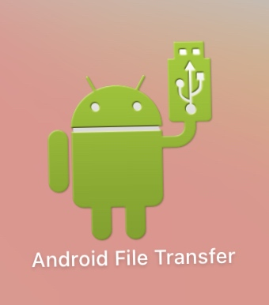
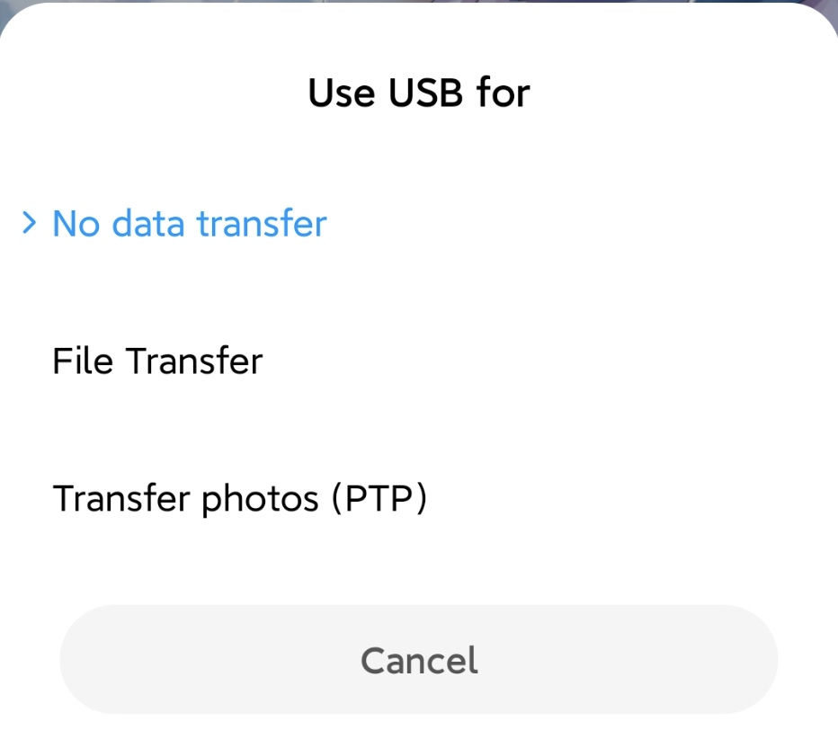
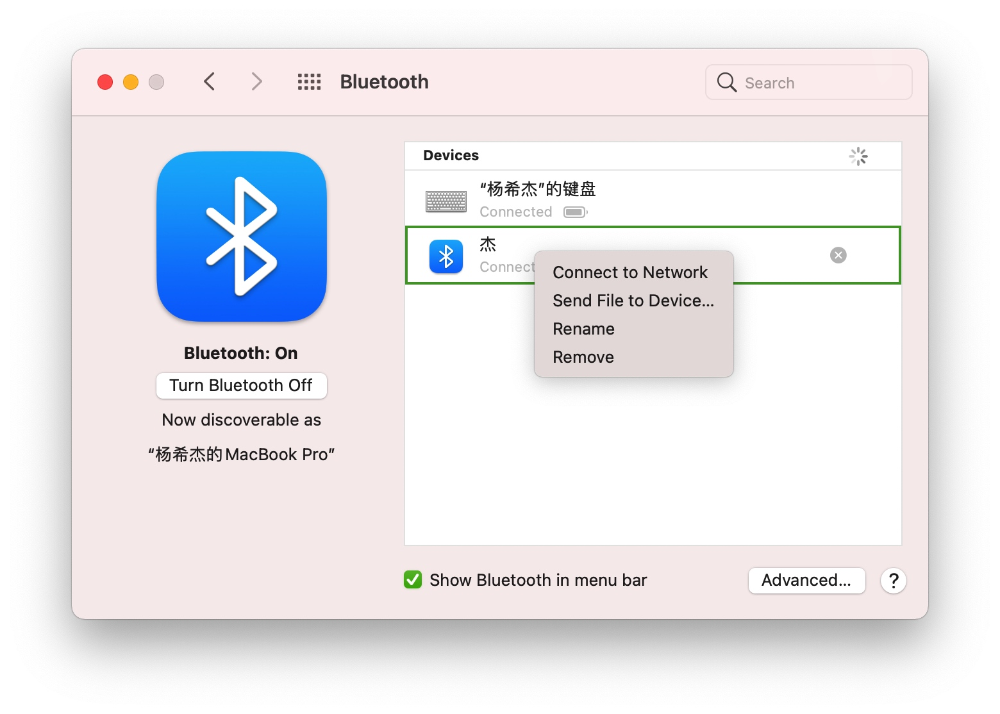
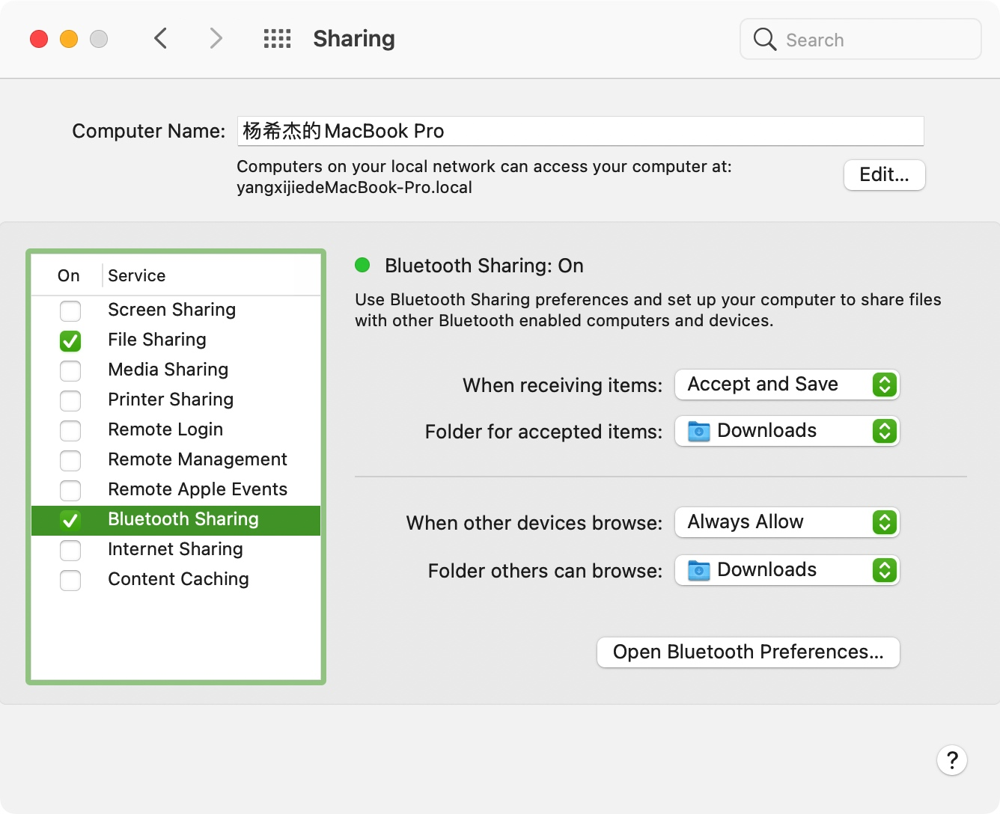
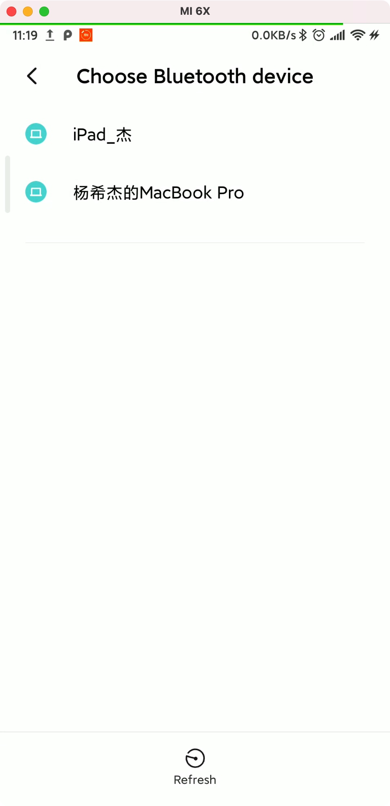
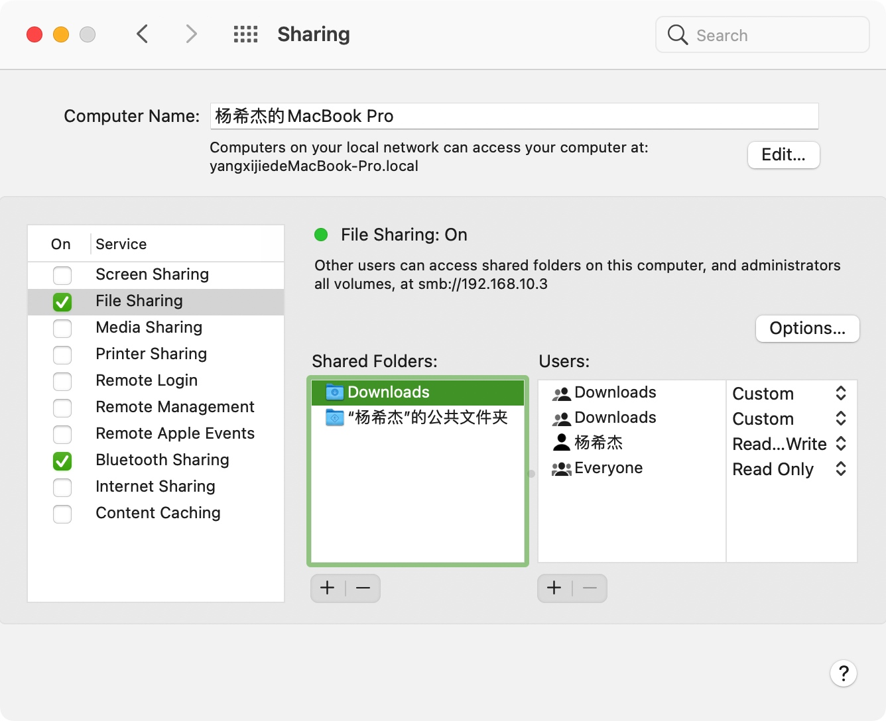
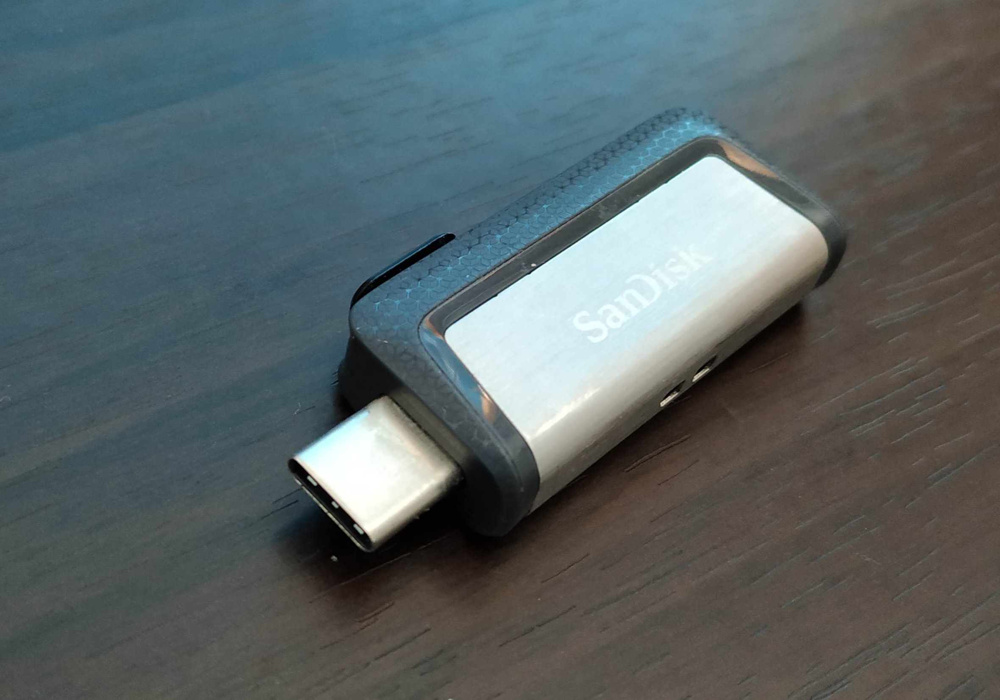
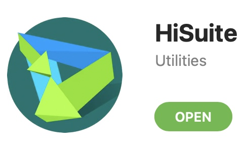

Mac连接安卓传输数据
此次视频录制于210210
大家好，我是杨希杰。
这期教程我来讲讲如何在Mac和安卓之间传输数据。
如果你用Mac用的很爽，那我还是推荐你买一部iPhone。苹果的生态做的真的很好，比如iCloud、隔空投送、拍照获取、文件传输。不过如果你和我一样用的是Android，那可能稍微要折腾一些。
安卓投屏Mac
brew install --cask android-platform-tools
（或brew cask install android-platform-tools（brew 版本低于2.6））
brew install scrcpy
adb devices（查看已连接的设备）
scrcpy
CSDN | Mac上投屏android_macOS+Android，如何用上投屏控制软件scrcpy
CSDN | MacOS/BigSur安卓设备投屏控制Scrcpy安装，Mac上的Total Control
GitHub | Genymobile / scrcpy README（中文）
微信和QQ的文件传输助手
适合传输任何文件（不超过限制大小）。如文件过多可以使用压缩包
注意定期清理传输的文件，若不清理微信会长久保存占用存储空间。
不适合在网络不佳的情况下使用。
通过数据线传输数据
30MB/s


通过蓝牙传输数据
速度非常慢，但操作简单，适合多个小文件（如图片）等在网络不佳的情况下使用。
Mac to Android

Android to Mac


通过连接同一Wi-Fi共享Mac文件夹

用U盘传输数据

华为手机使用官方开发的应用

ftp
只要手机和电脑联网，就能相互获取数据文件
但是操作过于复杂连接也不够稳定。至少我很少用